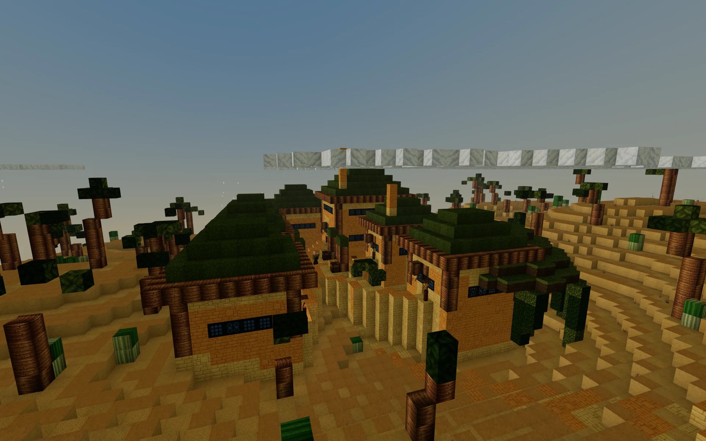
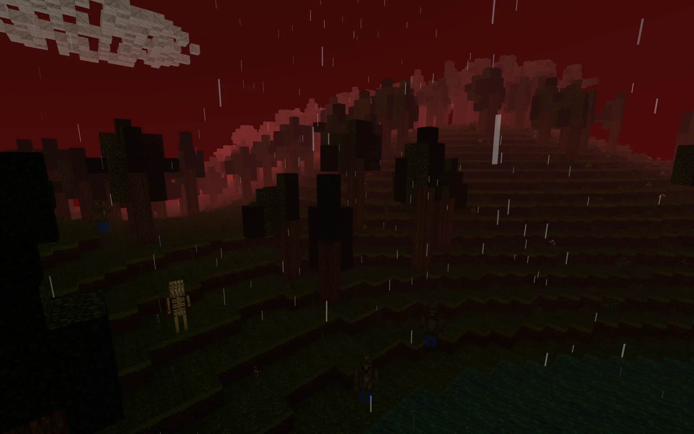
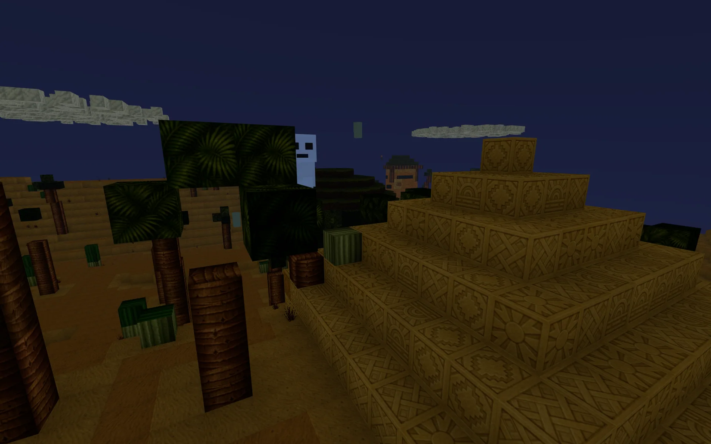

Dein Einstieg
Wähle deinen Weg.
Zieh sofort los, erschaffe zuerst deinen Helden oder bereite dich im Guide auf die erste Nacht vor.
Spiel
Dem Horizont entgegen
Kein Download, keine Wartezeit: Betritt deine Welt und finde heraus, was hinter dem nächsten Hügel liegt.
Charakter
Gib deinem Abenteuer ein Gesicht
Wähle deinen Look, übernimm ihn mit einem Klick und beginne genau als der Held, den du dir vorgestellt hast.
Guide
Bereit für die erste Nacht
Lerne die wichtigsten Handgriffe, baue deinen ersten Schutzraum und behalte genug Fackeln im Gepäck.
Eine Welt mit Ecken und Tiefe
Hinter jedem Horizont wartet etwas anderes.
Jeder Aufbruch beginnt im Kleinen: ein Stück Holz, eine erste Fackel, ein sicherer Platz für die Nacht. Doch schon bald führen dich Dorfgeschichten, verlassene Schienen und seltene Funde weit über dein erstes Lager hinaus.






Dein Rhythmus
Sammeln. Herstellen. Bauen. Entdecken.
- 01
Sammeln
Streife durch Wälder und Schluchten, sichere Nahrung und entdecke Rohstoffe, aus denen deine nächsten Möglichkeiten entstehen.
- 02
Herstellen
Verwandle Fundstücke in Werkzeuge, Waffen, Licht und Ausrüstung – jedes Rezept bringt dich ein Stück weiter.
- 03
Bauen
Aus dem ersten Schutzraum wächst ein Zuhause, aus einem Zuhause ein Ort, zu dem du nach jeder Reise gern zurückkehrst.
- 04
Entdecken
Folge den Geschichten der Dorfbewohner, steige in Minen hinab und wage dich dorthin, wo das Tageslicht endet.
Dein Charakter
Erstelle deinen Charakter. Spiele los.
Bevor du die ersten Spuren im Gras hinterlässt, gib deiner Figur einen Namen und einen unverwechselbaren Look. Deine Auswahl reist direkt mit dir in eine neue Welt.
- 1Look gestalten
- 2Charakter übernehmen
- 3Neue Welt starten
Nachricht ans Lagerfeuer
Deine Idee gehört zur Reise.
Du hast einen seltenen Fehler entdeckt, eine Idee für die Welt oder möchtest einfach erzählen, wie dein Abenteuer begonnen hat? Schreib uns. Jede Nachricht hilft dabei, Butzcraft lebendiger zu machen.
Für Fragen zum Spiel findest du viele schnelle Antworten auch im FAQ und im Guide.
Die Sonne geht schon unter
Wie beginnt deine Geschichte?
Zwischen dir und der ersten Nacht liegt nur ein Klick. Kein Download, kein Konto – nur eine neue Welt.
Jetzt Butzcraft spielen